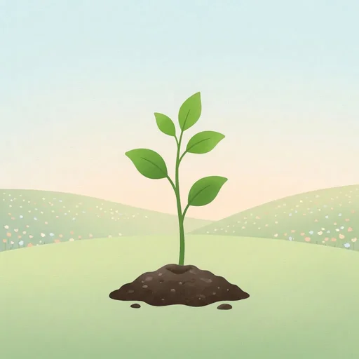
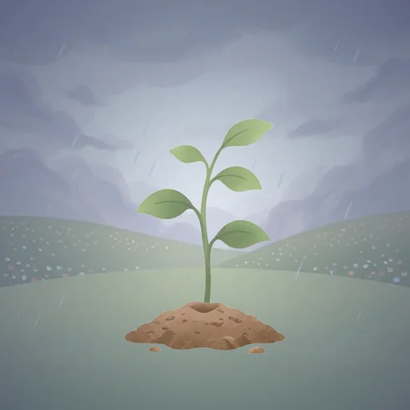

Ana ekranında küçük bir fidan. Vakit ilerledikçe havası değişir. Kıldığında tek dokunuşla söylersin; fidan sulanır, gökyüzü açar.
Yakında Google Play'deFidana dokun, “kıldım” de.
Widget her vaktin seyrini resimle anlatır. Yazı yalnızca vaktin adını ve son dakikalarda kalan süreyi gösterir; ne uyarı vardır ne bildirim.

Vakit girerGökyüzü açık, fidan dimdik.
Dörtte üçüYağmur başlar, yapraklar eğilir.Her vakit rastgele bir sahneyle gelir. Aynı sahne on vakit boyunca tekrar etmez, art arda iki vakit aynı mevsimden olmaz. Bir sahneye dokun, o mevsimin nasıl bozduğunu gör.
Mevsimler takvime bağlı değildir; temmuzda kar da yağabilir.
Namazım hiçbir veri toplamaz. Neyin nerede tutulduğunu ve nasıl silineceğini gizlilik politikasında açıkça yazdık.
Gizlilik politikası Privacy policy